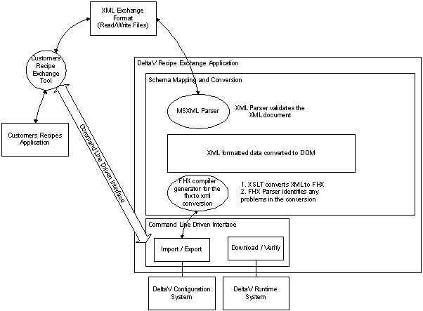
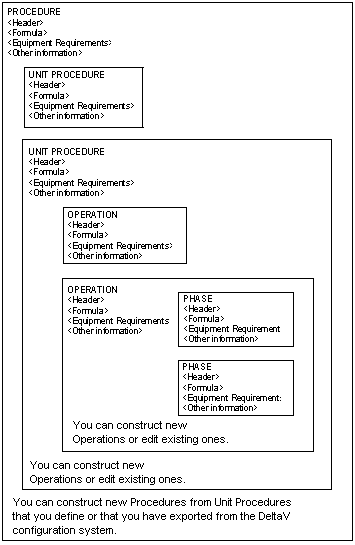

Appendix G - The Recipe Exchange Control
The DeltaV Recipe Exchange control (DLL) allows a recipe (operation, unit procedure and procedure) and any associated formulas to be imported to or exported from a DeltaV system. Recipe Exchange exports a recipe from a DeltaV system by converting FHX files into XML format. To import recipes created outside of the DeltaV system, third party applications can be used to create the XML files. Recipe Exchange converts the XML files to FHX format and imports them into the DeltaV system.
You can build an application using the Recipe Exchange control using Visual Basic. To run a recipe exchange client built using Visual Basic .NET on a DeltaV node that does not have Visual Basic .NET installed, two extra .DLL files are required. Those files are Interop.RECIPEEXCHANGE2lib.dll and Microsoft.VisualBasic.Compatibility.dll.
Recipe Exchange runs on ProfessionalPLUS workstation or Application Stations and it can:
Import or export recipes
Assign recipes to a Batch Executive and get a list of the node names
Verify recipes and formulas
Download recipes to the Batch Executive
Download a Batch Executive subsystem
Download a specified recipe to all the Batch Executive nodes to which it is assigned


The Recipe Exchange control is installed as part of the DeltaV installation and uses a component of the current Internet Explorer also included with the DeltaV installation.
Export
The Export method exports the specified recipe to the specified file in XML format. The recipes can be imported into other applications that support XML imports. Recipe Exchange supports exporting the following Recipes and Equipment items:
Operation
Operations subsystem
Procedure
Procedures subsystem
Unit procedure
Unit procedures subsystem
Formula
Control module class
(All) Control module classes
Unit class
Unit classes subsystem
Unit module
Phase class
Phase classes subsystem
Process cell class
Process cell classes subsystem
Equipment train class
(All) Equipment train classes
Unit selection policy
(All) Unit selection policies
Engineering units
(All) Areas
Area
Process Cell
(All) Nodes
Node
Named Sets
System
Note that not all information will be exported.
Exporting an XML file into a directory that contains an FHX file of the same object will delete the existing FHX export file. XML exports should not be sent to the same location as FHX files of the same object.
The information exported includes:
Export Process Cell Class: Category, process cell class and its property.
Export Unit Class: Unit class name, description, phase class associations, unit parameter definition names, types and its property (excluding period, primary control display, instrument area display, detail display, type and sub-type).
Export Phase Class: Phase class and properties (description and phase partners only), phase input parameters (including limits and engineering units), and report parameters (including engineering units). The information does not include the phase class logic.
Export Area: Information about the area, process cell, process cell class, unit module, unit class and unit phase, phase class. All information about continuous control modules in that area is not included.
Export Process Cell: Area, process cell and its arbitration, process cell class, unit modules, unit classes, unit phases, phase classes. The information does not include equipment ID, max owner, and MMI picture.
Export Equipment Train: This information is not filtered. All information associated with the equipment train (unit classes, unit modules, phases, phase classes, phase algorithms, and so on) and all details for every item (including period, primary control display, instrument area display, detail display, type and sub-type and so on) are exported.
Export Unit Selection Policy: expression, priority choice selection.
Export Unit Module: Area, process cell, process cell class, unit module name, description, associated unit class (from which unit parameter names and types can be obtained), all phase classes the unit class uses, phase input parameters (including limits and engineering units), and report parameters (including engineering units). For unit module properties, all are filtered out except description and equipment needed list. Unit phase properties are all filtered out except description. Soft Phases are not exported but phase classes of External Phases are (with no phase logic)
Export Operation: Operation, phase class in its step, equipment, formulas, link, property.
Export Unit Procedure: Unit procedure, operation (and its parameters), equipment, formulas, link, and property.
Export Procedure: Procedure, Unit procedure, equipment, formulas, link, and property.
Import
Recipe Exchange can import recipes that are in the defined DeltaV XML Standard format. These will be verified by Recipe Exchange during import and if there is a problem, you will be informed as to what it is. Recipe Exchange imports only the recipe. It does not import equipment, areas, process cells, phases or any other component of a batch. Those items must be created in DeltaV Explorer before importing the recipe. Also, you must already have made all of the assignments necessary before importing a recipe (such as phase class to unit class, and so on).
You can verify your recipe against the DeltaV XML recipe import schema found on the DeltaV installation disk #1 in the _Support\Recipe Exchange folder. The XML schema file is named DeltaV_XX_RecipeExchange_Import.xsd (where XX is the DeltaV version number). Additionally, the DeltaV_XX_RecipeExchange_Common.xsd is a common file used by both the import and export schema files.
If you are importing an existing recipe to replace one that is already in the DeltaV system, the two recipe names must be identical or the import will make a new recipe on import.
Depending on what you have changed or created the import order is very important. Follow the sequence below:
Operation scripts
Unit procedure scripts
Procedure scripts
Formula scripts
Not all scripts need to be imported every time. You can export a single formula and import just that formula. Keep track of what you have changed in the formula and import appropriately.
If you want to overwrite an existing item, imports should be executed as "Yes to all". Otherwise choose "No to all" and items already existing in the DeltaV database will not be overwritten by the import file items. After importing a recipe, you will need to assign the recipe to a Batch Executive and download the Batch Executive.
Security
To run Recipe Exchange, the logged in user must be a member of the DeltaV Administrator group.
Recipe Exchange verifies the user when it first starts but not again. It is extremely important that you do not leave Recipe Exchange running while the machine is unattended. Always log off the machine before stepping away.
Licensing
The license type needed to run Recipe Exchange is the Professional Batch license. This release supports simultaneous use by up to four clients.
Version Control
Version Control will track changes on import if the Version Control option is set to auto checkout. An import causes Version Control to check out the recipe then overwrite the checked out version with the imported version.
Recipe Exchange Sample
A Recipe Exchange sample is located at \DeltaV\samples\RecipeExchange\REClient (or \DeltaV\samples\RecipeExchange\REClient60 for VB 6.0) directory.
To use the sample application, follow these steps:
Compile and create RecipeExchange.exe.
Launch RecipeExchange.exe.
Connect first before calling other methods
The buttons on the sample dialog call the methods listed below.